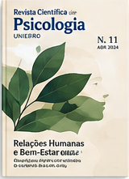
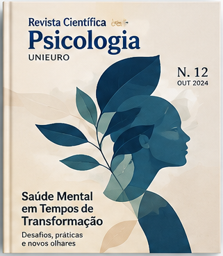
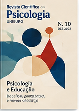
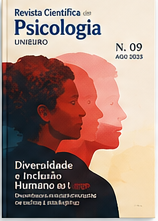
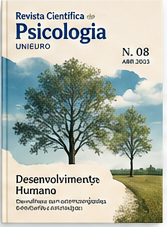

EDIÇÃO EM DESTAQUE
Revista Científica de Psicologia
Saúde Mental em Tempos de Transformação
Esta edição discute os desafios contemporâneos da saúde mental, com abordagens interdisciplinares sobre bem-estar, subjetividade e contextos sociais em mudança.
Edições recentes
Ver todas as edições →

